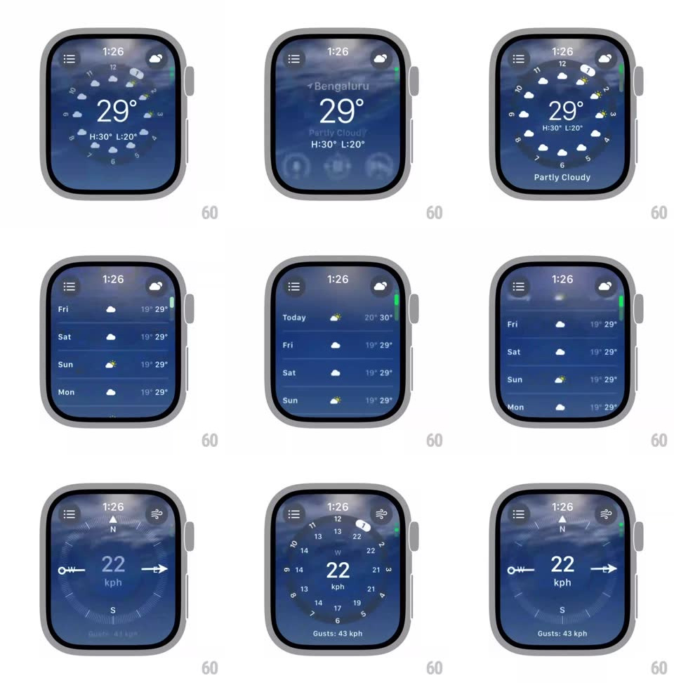

Media
Frame-by-frame

Rebuild this interaction 1:1: watchOS Weather navigation - a city summary ("Bengaluru 29° Partly Cloudy") with three metric circles; crown-scrolling morphs it into a circular hourly dial (condition icons on a clock ring), then a 10-day list; tapping a metric circle pushes a full-screen detail ("22 kph", "Gusts: 43 kph") over the animated cloudy sky.

Rebuild this interaction 1:1: watchOS Weather navigation - a city summary ("Bengaluru 29° Partly Cloudy") with three metric circles; crown-scrolling morphs it into a circular hourly dial (condition icons on a clock ring), then a 10-day list; tapping a metric circle pushes a full-screen detail ("22 kph", "Gusts: 43 kph") over the animated cloudy sky.
## Integration
Integration: stack-agnostic spec - springs given as stiffness/damping, timed motions as duration + curve; map every value to your framework and animation library of choice.
## Scene
Watch screens over a live cloudy-sky background: summary (city, big 29°, condition, H/L, three small circles: UV 8, wind 22 KPH, humidity 51%); hourly dial (hours 1-12 around a ring with condition glyphs, 29° center); 10-day list rows (Thu/Fri/Sat with icons and ranges, "Weather data sources and BreezoMeter"); wind detail (giant "22 kph", "Gusts: 43 kph").
## Motion spec
Pattern: crown-scrolled view ladder + metric push.
- Crown scroll: the summary crossfades through its states - the metric circles shrink and orbit into the hourly dial's ring (icons travel along arcs, spring ~260/24, ~500ms), and the 29° readout stays pinned as the shared element.
- Continued scrolling: the dial tilts and flattens into the list (ring elements fade, rows rise with 50ms stagger, 400ms).
- Reverse scroll unwinds the exact same ladder.
- Tap a metric circle: it expands to fill the screen (scale + radius morph, spring ~300/24, ~400ms) into the detail view - value counts up ("22" from 0, 500ms), unit and "Gusts" line fade in after.
- The cloudy sky animates continuously behind every view (slow drift, ~2% scale breathe) and dims slightly on detail views.
## Calibration
- One continuous ladder: summary <-> dial <-> list are positions on the same scroll axis, not separate screens.
- The background sky never cuts - it is the app's constant layer.
## Reduced motion
View changes crossfade; the sky is static.
## Don't miss
- Hour icons sit ON the clock ring at their hour positions - the dial is a real clock mapping.
- The detail view keeps the same wind-glyph chrome top-right as the metric circle had.